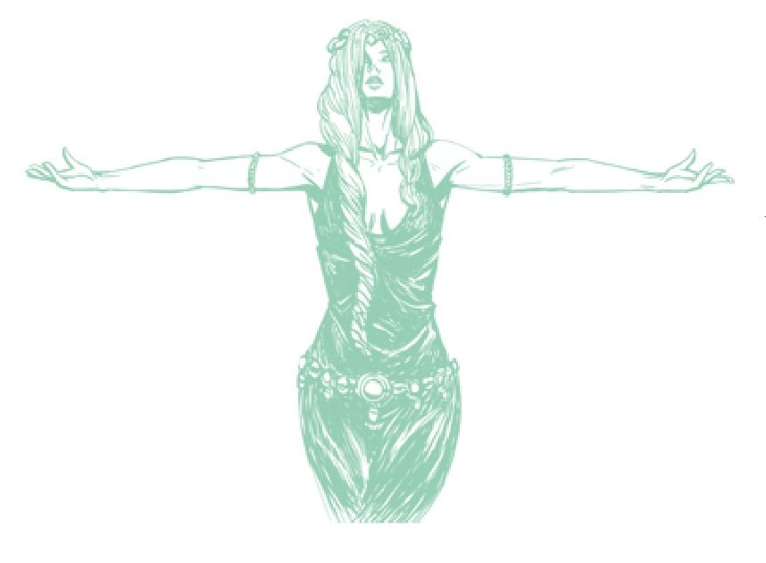

A semente mostrada neste talismã é especial, e sua representação ao lado dos Dois Dedos visa ilustrar o nascimento da Térvore. Para mim, a interpretação é clara: os Dois Dedos deram a Marika a semente que se tornaria a Térvore. Ela então ascendeu ao Portão da Divindade e se tornou uma deusa de uma nova era.
As guerras da Térvore se seguiriam, e os descendentes e o povo de Marika não seriam mais conhecidos como Xamãs. Eles agora seriam os Numen, descendentes daqueles de outro mundo: os Xamãs da Terra das Sombras.
Eu proponho que os Nox são os Numen, mas eles agora são definidos por sua lealdade à Era das Estrelas. Rogier refere-se aos Assassinos da Faca Negra como descendentes da Cidade Eterna, enquanto a Armadura da Faca Negra refere-se a eles como Numen. Em meu capítulo sobre a Cidade Eterna e os Nox, discuto a ramificação dos Nox em mais detalhes, mas apenas tenha em mente que eles compartilham uma herança comum; eles apenas se desenvolveram em duas culturas distintas.
Então, estes são uma raça de outro mundo de vida longa que claramente tem biologia diferente dos humanos normais, pois são “raramente nascidos”, mas também têm expectativas de vida sobrenaturais. Isso é particularmente interessante, porque temos duas conexões Numen que usam o termo “eterno”: as Cidades Eternas e a Rainha Marika, a Eterna.
Em ambas as instâncias podemos encontrar explicações para sua natureza eterna, como Marika recebendo vida eterna com sua ascensão à divindade, e as Cidades Eternas sendo amaldiçoadas a existir eternamente sob um céu noturno falso. Isso é o que eu havia sugerido anteriormente em meu vídeo de lore “Os Nox e as Cidades Eternas”. Mas, como acontece frequentemente, minha posição mudou um pouco e agora não consigo deixar de pensar que o termo “eterno” tem mais a ver com as longas vidas dessas pessoas Numen.
Não sabemos por que Marika foi escolhida. Talvez ela já fosse a Rainha Marika dos Numen ou dos Nox, ou talvez ela fosse apenas uma líder ou guerreira poderosa. Independentemente disso, sabemos que os Numen são uma raça notável e, portanto, um entre seu número faria um deus muito poderoso.
E ser elevado à divindade é muito mais do que apenas um título aqui. Marika se tornou um receptáculo para o próprio Elden Ring:
“A Rainha Marika é o receptáculo do Elden Ring, portadora de sua visão. Uma deusa, na verdade.”
- Leitora de Dedos EniaA Rainha Marika carrega literalmente o Elden Ring, como vemos quando ele aparece no corpo de Radagon/Marika no final do dia. É claramente parte dela; quando ela estilhaça o Elden Ring no trailer de anúncio, ela estilhaça a si mesma. A Vontade Maior precisava de Marika para operar como sua procuradora, pois a Térvore enfrentaria grande oposição, e exigia um deus de poder inabalável para cimentar seu domínio sobre o mundo. E assim Marika formou sua aliança. Como consorte, ela tomou Hoarah Loux, doravante conhecido como Godfrey, Primeiro Lorde Prístino.